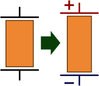
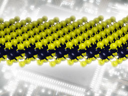
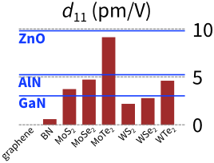

Beginning with Nobel Prize-winning work on graphene, researchers have predicted and observed astounding physical properties of atomically thin sheet crystals that can be cleaved from a parent crystal by using little more than a piece of scotch tape. While graphene has many interesting properties from a nanoscale electronics point of view, it does not have one that is useful for building electromechanical devices with moving parts: piezoelectricity.
 |
 |
| Deformation and electric fields are directly related in piezoelectric crystals. | MoS2, a piezoelectric monolayer material. |
Piezoelectricity is an important property associated with a limited set of crystals in which stretching or compression gives rise to electric charges within the material. Piezoelectric materials also deform under application of an external voltage. Piezoelectric materials are not only ubiquitous in today’s commercialized technology, they are highly relevant to that of tomorrow. The exciting prospect of active devices at the nanometer scale raises the question of how an engineer could design a device having actively moving parts in that size regime. An answer, we find, lies in piezoelectric 2D materials. Our research finds a strong piezoelectric effect even in the fundamental limit of thickness: that of one- or few-atom thick sheet materials.

Calculated piezoelectric coefficients along with those of three wurtzite 3D piezoelectrics.
By using sophisticated quantum mechanical computer simulation software, we have discovered that many of the non-graphene 2D crystals (BN, MoS2, WS2, MoSe2, and others) are strongly piezoelectric. In fact, these 2D materials are stronger piezoelectrics than many of the crystals used today's technology. Besides its surprisingly large magnitude, the very existence of the piezoelectric effect in these 2D materials is quite remarkable, given that a bulk 3D crystal of any of these materials is not piezoelectric at all!
Tutorial:
Emergent Electromechanical Properties of Nanoscale Materials, Evan Reed, Computational Chemistry and Materials Science program (Lawrence Livermore National Laboratory).
Publication:
Duerloo, K.-A. N., Ong, M. T., Reed, E. J., Intrinsic Piezoelectricity in Two-Dimensional Materials. Journal of Physical Chemistry Letters, 3, 2871–2876, doi:10.1021/jz3012436 (2012).